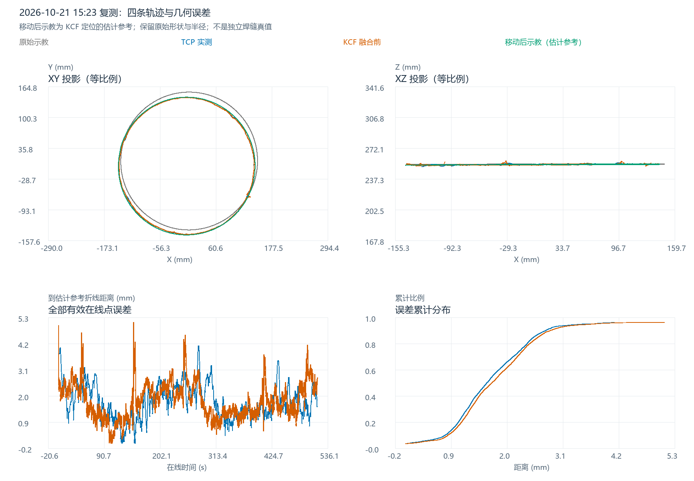

数据：2026-10-21 15:23:28–15:33:38；会话 20261021_152328_050。打开四轨迹交互三维图 · 统计表 · 完整结果与限制
当前无法建立独立焊缝真值。用户确认没有移动后的示教文件或独立工件移动参数。以下绿色参考依据 KCF 估计位置，不能把其误差直接称为绝对定位/检测精度。原始示教与本轮 KCF 还有约 1.6945 mm 的拟合半径差，刚体移动无法消除；原因仍可能涉及工件形状差异、特征定义、检测偏差或标定。
| 候选依据 | 调查证据 | 本次判断 |
|---|---|---|
| 独立测量的工件位姿/二次示教 | 用户确认没有相应文件和参数 | 这是后续建立独立真值的首选，当前缺失 |
| RobotSim 的工件位姿 | 当前生产代码把 virtualToReal 左乘当前工件位姿，并回写1068；本轮 98 批归档、37 次通过独立新帧验收的回写 | 属于局部表面ICP和视觉验收驱动的估计，且随运行变化；不能当真实工件的已知位姿 |
| 启动时段首点对齐 | 只把反扫末点对齐示教首点，缺少整圈约束；TCP到该参考均值 60.825 mm | 用于现有启动流程，不能作为事后整圈焊缝真值 |
| 用TCP轨迹对齐示教 | TCP正是被评价的执行结果 | 会吸收跟随偏差，不采用 |
| 用原始KCF整圈圆心/法线定位 | 与机器人执行轨迹分开，覆盖约 359.73°；能约束中心和平面 | 作为当前可复算的估计参考采用，保持原始半径、点形状与点序，补做参考敏感性和留出验证 |
不是把示教变成 KCF 拟合圆。仅在估计移动参数时，对 2° 角度分箱的中位代表点拟合圆心/法线，降低驻留密度与局部跳点对定位的影响；所有原始观测仍用于最终误差统计，未平滑、未剔除异常点。示教的全部 1368 个实际点和原有线段均保留；不缩放、不改半径、不做非刚性变形。
原始示教圆心 (4.492358, 8.909366, 253.907594) mm → 当前 KCF 圆心 (-0.508964, -1.674451, 253.478367) mm，圆心位移 (-5.001322, -10.583817, -0.429227) mm；法线最小夹角 0.167571°。近圆形数据不能可靠确定绕自身法线的相位角，本次选择最小旋转，不额外拟合绕轴转角。原始轨迹的小幅非圆特征仍保留，但其物理相位尚未经独立验证。
完整变换采用列向量 p_new = R p_old + t；矩阵中的平移 t=(-4.354836, -10.218312, -0.452403) mm 与“圆心位移”不同，因为旋转也会改变圆心位置。下载4×4刚体矩阵；下载移动后示教全部点。
[[ 0.999996759 -0.000007043 -0.002545841 -4.354836012] [ 0.000003378 0.999998964 -0.00143954 -10.218312481] [ 0.002545848 0.001439527 0.999995723 -0.452402985] [ 0. 0. 0. 1. ]]
四组轨迹统一到变位机末节的材料坐标系，单位 mm。机器人基坐标先按 RBCALIB 转到变位机基坐标，再逐点消除 Ry(S1)Rz(S2) 的外轴旋转；视觉原有父级TCP原点相对末节有 Z=231 mm 偏置，+231 mm 后与原始 W 文件一致。这里的末节材料系与工件父级1063 TCP系只差固定原点，不能混用。依据当前 PositionerKinematics.cpp、WeldProjectionContextBuilder.cpp 和 OnlineCorrectionTrajectoryPlanner.cpp 复核。
TCP：在线运行且 CORFLAG=1、DETFLAG=1、S_START=1、S_HOLD=0、ALARM=0，共 5848 点。KCF：online_running 且 result_valid=1，共 7522 点，使用 before_fusion_x/y_px 和同帧冻结机器人姿态重新投影。融合后的 final_x/y 不冒充原始 KCF。原始记录共 6710 条机器人状态、7841 条视觉记录，启动/等待/停止阶段不纳入主要统计。没有额外去重或异常值裁剪。
e_i = min over every recorded reference segment [a_j,b_j] ||p_i - closest_point(p_i,[a_j,b_j])||_2 平均误差 = sum(e_i)/N 最大误差 = max(e_i) RMSE = sqrt(sum(e_i^2)/N)
使用点到实际示教折线所有有限线段的最短三维距离，不按行号或时间硬配对，不改为最近采样点或到拟合圆的距离，不自动补闭合线段。均值按记录样本加权；这衡量路径几何贴合，不衡量沿缝时序滞后或姿态角误差。TCP与KCF不同采样数量分别统计。
| 比较对象 | 点数 | 平均距离/mm | 最大距离/mm | RMSE/mm | P95/mm | 最大值时间 |
|---|---|---|---|---|---|---|
| TCP → 移动后示教（估计参考） | 5848 | 1.7110 | 4.1262 | 1.8506 | 2.8686 | 15:28:50.894 |
| 原始 KCF → 移动后示教（估计参考） | 7522 | 1.7929 | 5.1076 | 1.9314 | 2.9812 | 15:26:41.282 |
| 融合后视觉 → 同一估计参考（补充） | 7522 | 1.8081 | 4.9830 | 1.9461 | 3.0017 | 15:24:11.958 |
| TCP → 原始 KCF 折线（补充） | 5848 | 0.3400 | 2.5209 | 0.5188 | 1.3411 | 15:27:07.907 |
TCP→KCF 折线只是补充的几何一致性指标，不是 TCP 的绝对误差；相邻 KCF 异常点的连线可能影响最近距离。融合后视觉采用相同参考，便于观察融合影响，不参与参考定位。
| 数据 | 描述性拟合半径/mm | 圆心X/mm | 圆心Y/mm | 圆心Z/mm |
|---|---|---|---|---|
| 原始示教 | 143.7170 | 4.4924 | 8.9094 | 253.9076 |
| 原始KCF | 142.0225 | -0.5090 | -1.6745 | 253.4784 |
| TCP | 142.0843 | -0.5529 | -1.7111 | 253.4956 |
TCP与KCF拟合半径仅相差 0.0618 mm，二者圆心相差 0.0598 mm。但KCF半径比原始示教小 1.6945 mm。它与约1.7–1.8 mm的参考误差量级相近，提示应优先查明“同一真实焊缝、同一特征、同一形状”的前提；不能把全部差值直接解释为控制没跟上，也不能通过缩放示教消掉差值后宣称高精度。
| 移动方式 | 评价轨迹 | 均值/mm | 最大/mm | RMSE/mm |
|---|---|---|---|---|
| translation_only | TCP | 1.7303 | 4.2387 | 1.8747 |
| translation_only | raw_KCF | 1.8092 | 5.1757 | 1.9536 |
| center_normal_rigid | TCP | 1.7110 | 4.1262 | 1.8506 |
| center_normal_rigid | raw_KCF | 1.7929 | 5.1076 | 1.9314 |
两种移动方式得到的均值差约0.02 mm，说明本轮主要统计不依赖这0.168°小倾角。
沿整圈每20°交替划为两组。用一组估计参考，评价另一组，交换后合并。留出KCF均值 1.7934 mm、最大 5.1488 mm、RMSE 1.9399 mm；两个留出参考相对全量参考的逐点位移最大约 0.1663 mm。这支持对齐参数对局部采样有一定稳定性，不能消除共享标定和检测系统偏差，也不能把估计参考升级为真值。见逐点留出结果。
| 阶段 | 开始 | 结束 | 点数 | 均值/mm | 最大/mm | RMSE/mm |
|---|---|---|---|---|---|---|
| before_first_verified | 15:24:12.051 | 15:24:15.490 | 36 | 3.8500 | 4.0507 | 3.8509 |
| after_first_verified | 15:24:15.616 | 15:32:47.349 | 5812 | 1.6977 | 4.1262 | 1.8314 |
首次通过验收前只有36个TCP点，且前后处在不同焊缝位置；该分段不构成局部ICP改善量的受控实验，不能将均值下降全部归因于ICP。各机器人程序行的统计见分段表。

交互图提供3D/XY/XZ/YZ视角、两组示教独立的点/线/拟合圆切换、Z显示倍率。倍率只改变显示比例，误差始终基于真实坐标。
本轮有效在线区间覆盖整圈，TCP与检测轨迹总体一致，约1.7–1.8 mm的主要参考差异仍包含明显形状/半径成分。与旧轮相同估计方法相比，TCP均值由3.75降至1.71 mm、最大由15.17降至4.13 mm；工件摆放、轨迹和运行条件没有严格控制，因此仅说明各自归档的描述性结果变化，不能作为单一工具修复或局部ICP的因果增益。
当前建议：本轮保留上述刚体移动参考用于诊断，明确标注“估计参考”。若要报告严格的TCP/KCF绝对焊缝精度，应在当前摆放下重新示教焊缝，或测量原摆放与当前摆放中至少三个不共线固定特征点，以独立刚体变换移动原始示教。先核对原示教和本次工件是否确为相同半径、相同焊缝定义；即便取得独立位姿，工件形状不同也不能仅靠刚体移动建立准确真值。
复算全部final视觉点与归档工站坐标的最大差 9.16e-07 mm；恢复末节坐标后与归档PositionerTcp+231的最大差 8.77e-07 mm；784 帧原始KCF与局部归档独立焊点的最大差 1.24e-07 mm。刚体矩阵正交性、行列式和所有示教线段长度保持均已断言。输入SHA-256见哈希清单。
原始输入：output/online_correction/20261021_152328_050/；局部配准归档：output/online_local_registration/20261021_072328_003_session_1/；示教：data/WorkPiece/20260404CHUFENGKOU1_W.txt；当前标定：config/calibration/RBCALIB.DAT、SENSORPARA.txt。当前标定可重现归档，但没有完整历史标定快照，绝对标定精度不由上述数值闭环保证。
参考了前一对话已获取的Notion数据分析展示偏好（2026-10-19快照）和AI协作工作流（2026-10-18快照），见历史快照。本次在线刷新不可用，未修改Notion。本轮只新增派生分析产物，未修改业务源码或原始数据，未删除文件、使用鼠标或发送设备指令。静态图已检查；真实浏览器旋转/缩放操作尚未验收。
复现：使用已提供numpy/pandas/Pillow的项目分析Python，依次运行同目录 analyze.py、build_report.py、verify.py。图表所用Plotly为既有本地资产，HTML已内嵌该依赖，可离线打开。